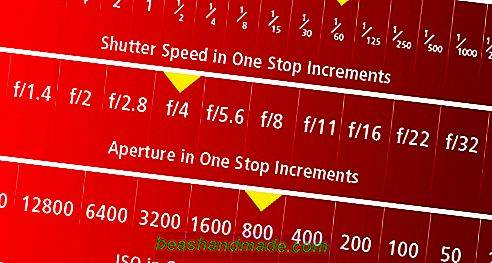
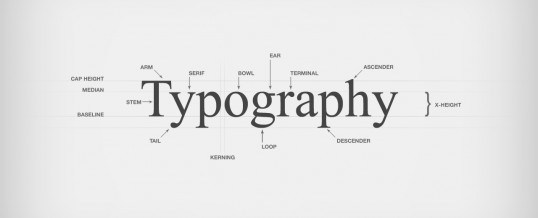
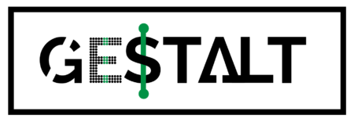

Photoshop
Photoshop er et billedbehandlingsprogram udbudt af softwareproducenten Adobe. Photoshop fås både til Mac OS og Windows, og kan både bruges af professionelle og på hobbyplan.
Med Photoshop kan du i store træk gør alt med billeder, kun fantasien og dine Photoshop-evner sætter grænser. Faktisk, så siger man typisk, at lang de fleste plakater, bogomslag, logoer, magasiner og brochure, som du ser i din hverdag, er blevet manipuleret på en eller anden måde med Photoshop. Her er blot et par eksempler på, hvad der er muligt med Photoshop:

Illustrator
Illustrator har en super blanding af værktøjer til både tegning, tekst og typografi. Men Illustrators helt klare fordel er at lave grafik, der skal kunne skaleres til store størrelser uden at tabe kvalitet.
Dette er med til at gøre programmet uundværligt for mange grafikere, der arbejder med forskellige medier.

Farver
Farver spiller en stor rolle, når man ønsker et bestemt udtryk i fx malerkunst, fotografering og film. Farverne kan bruges som et virkemiddel, som kan forstærke noget op, og det samme kan mangel på farver - altså sort/hvid. Her er 3 måder, man kan bruge farver på som et virkemiddel:
Komplementærfarver
I nogle billeder bruger man farver, der er modsætninger til hinanden, for at skabe balance. I fx et reklamebillede, hvor der er en dominerende farve, så vælger man ofte den modsatte farve til noget grafik - fx et prisskilt eller et slogan. Den modsatte farve kaldes komplementærfarven. På den måde træder dette grafik bedre frem og bliver mere synlig - og der er samtidig harmoni mellem farverne.

fotografering
RAW RAW er det filformat man skal bruge, da det er direkte hvad kameraets sensor opfatter, uden noget bearbejdning. JPEG er et komprimeret format, behandlet af kameraet. Når man skal efterbehandle et billede i eksempelvis Lightroom, så bruger man altid RAW, da det giver en det bedst mulige udgangspunkt. Lukkertid/Shutter Speed Jo længere lukkertid, jo lysere billede Jo længere lukkertid, jo mere bevægelsessløring og rystelser ISO Kameraets lysfølsomhed Jo højere/hurtigere ISO, jo mere 'støj' fra sensoren ses på billedet Indstilling af kameraet En kombination af ISO, blænde og lukkertid Er afhængelig af ønsket resultat, tilstedeværende og medbragt lys og evt. bevægelse

Typograf
Typografi er ikke bare en font. Det er et kunsthåndværk, som sjældent kan erstates af bare hvad som helst. Samsung bruger over en million på deres typografi til deres logo. Det er den måde bogstaverne hænger sammen på, deres størelse i forhold til hinanden, deres linje afstand spiller også meget ind. Finder man f.eks en typeface der ser håndskrevet ud, er der en del ting der skal kigges efter for at være sikker på, at det ser godt ud i sidste ende.

Gestaltlove
I gestaltpsykologien er der opstillet en række love (gestaltlovene), som giver god mening at anvende til interaktionsdesign. Gestaltlovene handler om den måde, hvorpå hjernen grupperer former og figurer, og prøver at uddrage et helhedsbillede. Her er de grundlæggende principper (i parentes er de engelske betegnelser nævnt).
- Proximity. Figurer der er placeret tæt på hinanden ses som en gruppe.
- Similarity invarians. Ens figurer opfattes som en gruppe.
- Closure. Delelementer af et billede stykkes sammen til at skabe helheden.
- Kontinuitet og symmetri. Optræder to figurer symmetriske omkring en linje, ses de som en gruppe.
- Pragnanz – figur/baggrund. Hjernen leder den efter mønstre, kontinuitet, ensartethed.
- Past experience, “Common Fate”. Dækker bl.a. over brugen af ikoner
- Forbundethed – Forbindes figurer med en streg, opfattes de umiddelbart som sammenhørende
